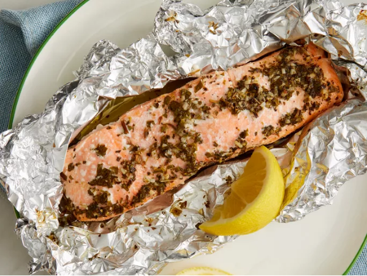

Salmon

Description
Excellently cooked piece of fresh salmon, covered in garlic,lemon juice and parsely.
Ingredients
- 6 tablespoons light olive oil
- 2 gloves garlic, minced
- 1 tablespoon lemon juice
- 1 tablespoon fresh parsley, chopped
- 1 teaspoon dried basil or to taste
- 1 teapsoon salt or to taste
- 1 teaspoon freshly ground black pepper or to taste
- 2 6 ounce salmon fillets
Cooking Steps
- Whisk olive oil, garlic, lemon juice, parsely, basil, salt, and pepper together in a medium bowl.
- Arrange salmon fillets in a small glass or ceramic baking dish; pir marinade over salmon. Cover and marinate in the refrigerator for about 1 hour, turning occasionally
- Preheat the oven to 375 degrees F.
- Transfer salmon fillets onto a large piece of aluminum foil. Spoon marinade on top and fold up the foil to seal. Place sealed foil packs on a baking sheet.
- Bake in preheated oven until fish flakes easily with a fork, about 20-25 minutes.
- Serve hot and enjoy.
Homepage